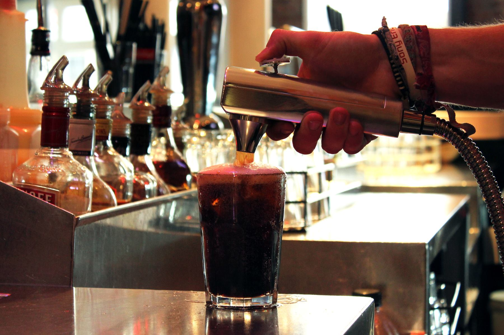

<div id="single-portfolio">
	<div id="portfolio-details" class="container">
		<a class="close-folio-item" href="#"><i class="fa fa-times"></i></a>
		
		<div class="row">
			<div class="col-sm-9">
				<div class="project-info">
					<h3>Pistolas de Soda</h3>
					<p>Los dispensadores hidráulicos para bebidas con forma de pistola, presentan gran presencia en Estados Unidos, Europa y Asia (90% del mercado)</p>
					<p>Poseen entre 5 y 14 productos (botones), se pueden conectar hasta 4 mangueras por equipo, la mezcla es realizada en el punto de venta y funcionan con el sistema de jarabe Bag in Box</p>
				</div>
			</div>
		</div>
	</div>
</div>